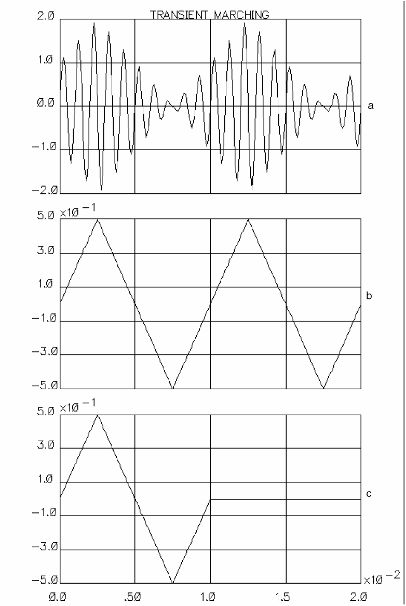
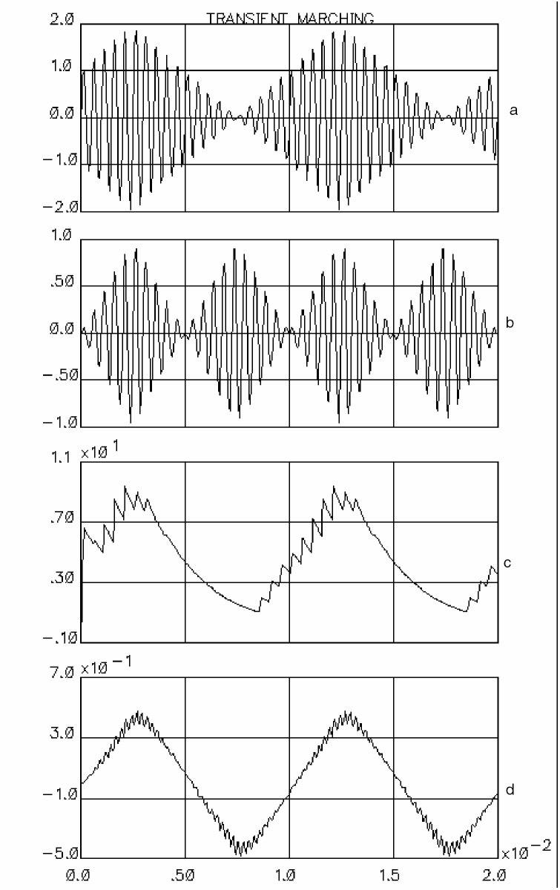

3
Functional Block Library Examples
As described in Chapter 1, “About the Functional Block Library,” functional blocks contain the essential functionality of the parts they represent. One important application of these blocks is the creation and simulation of high-level systems. The components in the library are used as primitives to create more complex blocks. For example, you can arrange the system shown in example 1 to appear as a single symbol for use in a communication system design.
Examples 1 and 2 illustrate the use of the functional blocks and also demonstrate that you do not have to use the blocks in isolation. Regular circuit components and components from any other installed library can be placed on a schematic and simulated.
DSB-AM Example
The example system shown in Figure 3-1 shows how the process of double-sideband amplitude modulation (DSB-AM) can be performed using functional blocks. The piecewise linear voltage source generates one cycle of a triangular wave, as shown on waveform c in Figure 3-2.
The repeater block takes as its input the one cycle triangular wave and repeats it, with a period of 10 ms. The output from the repeater is the periodic triangular waveform shown in waveform b in Figure 3-2.
This signal is the baseband signal,
V
s
Here, the carrier is set to 1 volt at 1000 Hz. As the modulation process is performed by the multiplier block (product or balanced modulation), the amplitude of the baseband signal is raised from 0.5 volts at the output of the repeater, to 1 volt. To achieve DSB-AM, the baseband signal must also be level-shifted by an amount equal to the carrier amplitude.
To achieve this, set the gain of the amplifier block to 2 and the amount of shift to 1 volt. The modulated result is shown in waveform a in Figure 3-2.
The waveforms for this example are shown in Figure 3-2, where
- Waveform a is the modulated result of the DSB-AM modulation
- Waveform b is the periodic triangular waveform that the repeater block generates as output
-
Waveform c is one cycle of a triangular wave that the linear voltage source generates
Figure 3-2 Waveforms for DSB-AM Schematic
DSB-SC Example
Example 2 uses the circuitry already described in Example 1. The circuitry in Example 2 has the following additional features that enable DSB-SC modulation:
The frequency of the carrier reinsertion oscillator is set to 2000 Hz, which is the frequency of the carrier signal used in this example. Further, the cutoff (3 dB) frequency of the single pole (low-pass) filter at the output of the remodulator was set to 500 Hz. This allows up to the fifth harmonic of the detected triangular wave to be passed to the output.
Figure 3-3 DSB-AM and DSB-SC Schematic
The waveforms for this example are shown in Figure 3-4, where
- Waveform a is the DSB-AM output
- Waveform b is the DSB-SC output
- Waveform c is the output of the incoherent demodulator
-
Waveform d is the output of the coherent detector
Figure 3-4 DSB-AM and DSB-SC Schematic
Return to top